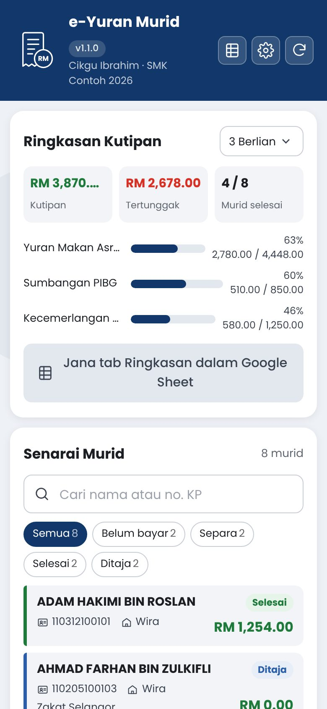
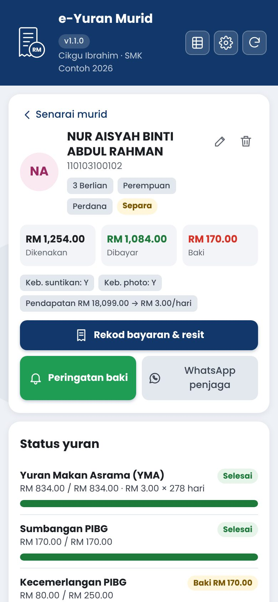
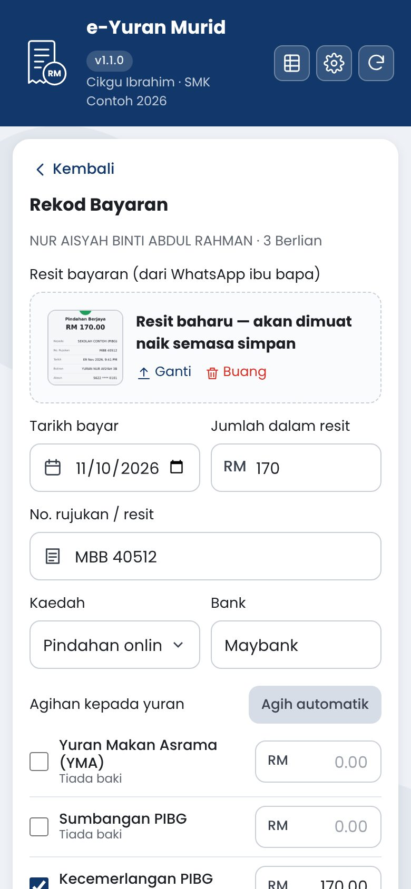

Rekod bayaran yuran murid — YMA, PIBG, dobi dan lain-lain — terus dari telefon. Ibu bapa hantar resit melalui WhatsApp, guru muat naik ke app, dan semuanya tersusun dalam Google Sheet. Percuma, dan data disimpan dalam Google Drive anda sendiri.
Dibina untuk guru kelas dan guru asrama yang mengutip yuran — tanpa menyalin resit satu per satu ke dalam Excel.
Muat naik gambar atau PDF resit. Di komputer, salin gambar dalam WhatsApp Web dan tekan Ctrl+V — siap.
Selepas resit dimuat naik, app membaca jumlah, tarikh, No. rujukan & bank (OCR Google Drive) dan mengisi borang untuk anda semak.
Pautan PDF penyata yuran setiap murid — ibu bapa boleh semak status & baki bila-bila masa tanpa log masuk. Dikemas kini automatik.
Setiap tambah, ubah & padam direkodkan (siapa, bila, sebelum → selepas). Bayaran dipadam masuk Sampah dan boleh dipulihkan.
Isi jumlah resit dan tekan Agih automatik — dibahagikan kepada YMA, PIBG dan lain-lain ikut baki.
Jumlah kutipan, tertunggak dan peratus setiap yuran bagi setiap kelas. Tapis murid: belum bayar, separa, selesai.
Mesej pengesahan penerimaan bayaran dan peringatan baki tertunggak, siap ditulis — tekan sahaja Hantar.
Kadar harian dikira daripada pendapatan isi rumah (cth. RM1 atau RM3 sehari × 278 hari). Boleh ditetapkan manual.
Zakat, Yayasan Sarawak, Yayasan Sabah… untuk semua yuran atau yuran tertentu sahaja.
Jemput guru lain melalui pautan WhatsApp. Hadkan setiap guru kepada kelas mereka sahaja.
Amaran jika No. rujukan yang sama sudah pernah direkod untuk mana-mana murid.
Import senarai murid dari Sheet lama dengan salin & tampal. Jana tab Ringkasan untuk dicetak.



Tangkapan skrin menggunakan data rekaan.
Untuk guru yang menguruskan yuran kelas atau sekolah. Ambil masa kira-kira 2 minit.
Di telefon atau komputer. Di komputer, anda juga boleh imbas kod QR di atas dengan telefon.
Pilih akaun yang mahu digunakan. Sheet e-Yuran Murid akan dicipta dalam Google Drive akaun ini.
Jika akaun DELIMa (@moe-dl.edu.my) tidak dibenarkan oleh pentadbir domain, gunakan akaun Gmail.
Ini normal untuk app percuma yang dibina sendiri dan belum melalui proses semakan Google. Untuk teruskan:
Perkataan “unsafe” hanya bermaksud app belum disemak oleh Google. Kod sumber app ini terbuka untuk dilihat di GitHub.
App memerlukan kebenaran ini untuk berfungsi:
Tekan ikon ⚙ Tetapan: isi nama sekolah, semak jenis & amaun yuran. Kemudian Import pukal — salin baris (Bil, Nama, No KP, Jantina, Rumah…) dari Google Sheet lama dan tampal.
Tip: buka halaman pasang di telefon dan pilih Add to Home Screen untuk ikon app di skrin utama.
Kurang seminit bagi setiap resit.
Gambar resit bank, tangkapan skrin FPX atau PDF.
Taip sebahagian nama atau No. KP. Di telefon, simpan gambar dari WhatsApp ke galeri dahulu; di komputer, salin gambar dalam WhatsApp Web dan tekan Ctrl+V.
App membaca resit dan mengisi jumlah, tarikh, No. rujukan & bank (ditanda kuning), kemudian mengagihkan jumlah kepada yuran. Semak, betulkan jika perlu, dan tekan Simpan.
App menawarkan mesej WhatsApp siap ditulis: senarai bayaran yang diterima, baki tertunggak, dan pautan penyata (jika dicipta) supaya penjaga boleh menyemak sendiri selepas ini.
Contoh: guru kelas lain, bendahari PIBG atau warden asrama menggunakan Sheet yang sama.
Isi emel Google guru tersebut, pilih peranan (Guru atau Pentadbir) dan kelas (kosong = semua kelas). Tekan Simpan — Sheet akan dikongsi dengan guru itu secara automatik.
Pautan jemputan dihantar melalui WhatsApp. Guru tersebut buka pautan, log masuk dengan emel yang didaftarkan — dan terus melihat data yang sama.
Guru juga boleh tampal pautan atau kod jemputan di Sheet & perkongsian → Sertai Sheet guru lain, dan bertukar antara beberapa Sheet.
Data murid kekal dalam akaun Google sekolah/guru — bukan pada pelayan pembangun.
Dalam Google Sheet e-Yuran Murid di Google Drive guru yang mula-mula membuka app. Resit disimpan dalam folder Resit e-Yuran Murid di Drive guru yang memuat naik, dan salinannya dalam tab tersembunyi ResitData supaya semua guru yang dikongsi boleh melihatnya.
Tidak. App berjalan menggunakan akaun guru sendiri (execute as user accessing), dan tiada data dihantar ke pelayan pembangun atau pihak ketiga.
Penyata ialah PDF dalam Drive guru yang menciptanya, dikongsi “sesiapa yang ada pautan” (lihat sahaja). Ia mengandungi nama, kelas, No. KP separa, status yuran & sejarah bayaran — tanpa pendapatan isi rumah. Penyata hanya dicipta apabila guru menekan butang, dan boleh ditarik balik bila-bila masa. Jika domain akaun anda menyekat perkongsian awam, gunakan akaun Gmail.
Tab Log dalam Sheet merekod setiap perubahan. Bayaran yang dipadam disimpan dalam Sampah sehingga dipadam kekal oleh pentadbir.
Hanya guru yang diberi akses kepada Sheet oleh pentadbir. Pendapatan isi rumah dan No. KP adalah maklumat peribadi — kongsi hanya dengan guru yang perlu, dan buang akses guru yang sudah bertukar.
drive.file: hanya fail yang dicipta oleh app ini.Tarik balik kebenaran di myaccount.google.com/permissions. Sheet & folder resit kekal dalam Drive anda.
Soalan atau laporan masalah: buka isu di GitHub.
Code.gs dan Index.html (Fail → HTML, nama Index) dari repo GitHub.appsscript.json dari repo (ini juga mengaktifkan Drive API v3).…/exec dan masukkan ke dalam docs/config.js supaya butang & kod QR halaman ini menghala ke app anda.